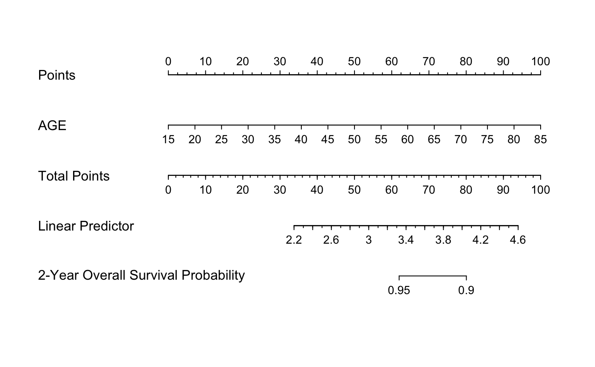

Automatic MCP model selection for high-dimensional Cox models, evaluated by penalized partial-likelihood.
hdcox.mcp(x, y, nfolds = 5L, gammas = c(1.01, 1.7, 3, 100), eps = 1e-04, max.iter = 10000L, seed = 1001, trace = FALSE, parallel = FALSE)
| x | Data matrix. |
|---|---|
| y | Response matrix made by |
| nfolds | Fold numbers of cross-validation. |
| gammas | Gammas to tune in |
| eps | Convergence threshhold. |
| max.iter | Maximum number of iterations. |
| seed | A random seed for cross-validation fold division. |
| trace | Output the cross-validation parameter tuning
progress or not. Default is |
| parallel | Logical. Enable parallel parameter tuning or not,
default is FALSE. To enable parallel tuning, load the
|
library("survival") library("rms") # Load imputed SMART data; only use the first 150 samples data("smart") x = as.matrix(smart[, -c(1, 2)])[1:150, ] time = smart$TEVENT[1:150] event = smart$EVENT[1:150] y = Surv(time, event) # Fit Cox model with MCP penalty fit = hdcox.mcp(x, y, nfolds = 3, gammas = c(2.1, 3), seed = 1001) # Prepare data for hdnom.nomogram x.df = as.data.frame(x) dd = datadist(x.df) options(datadist = "dd") # Generate hdnom.nomogram objects and plot nomogram nom = hdnom.nomogram( fit$mcp_model, model.type = "mcp", x, time, event, x.df, pred.at = 365 * 2, funlabel = "2-Year Overall Survival Probability") plot(nom)